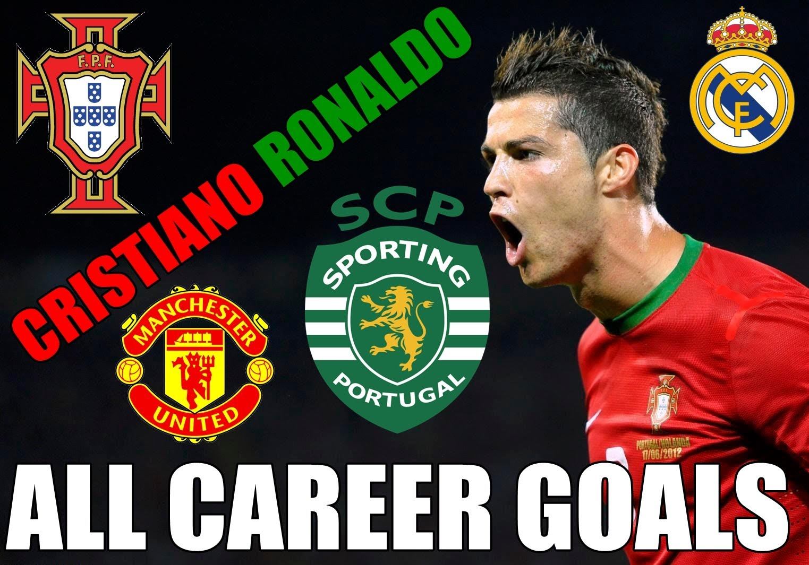

Carrer
Ronaldo began his career as a youth player for Andorinha, where he played for two years, before moving to C.D. Nacional. In 1997, he moved to Sporting CP. In 2003 he signed for Manchester United for £12.2 million (€15 million). In 2004, he won his first trophy, the FA Cup. In 2007 and 2008, Ronaldo was named FWA Footballer of the Year, and was named the 2008 FIFA World Player of the Year. In 2009 he won the FIFA Puskás Award for Goal of the Year. He was the world's most expensive player when he moved from Manchester United to Real Madrid in 2009 in a transfer worth £80 million (€94 million/$132 million). His buyout clause is valued at €1 billion.[10] In May 2012, he became the first footballer to score against every team in a single season in La Liga.[11] Ronaldo holds the record for most goals scored in a single UEFA Champions League season, having scored 17 goals in the 2013–14 season.[12] In December 2014, Ronaldo became the fastest player to score 200 goals in La Liga, which he accomplished in his 178th La Liga game.[13] He is the only player in the history of football to score 50 or more goals in a season on five consecutive occasions.[14] In September 2015, Ronaldo became the all-time top goalscorer in the UEFA Champions League, and in October 2015 he became Real Madrid's all-time leading goalscorer.
